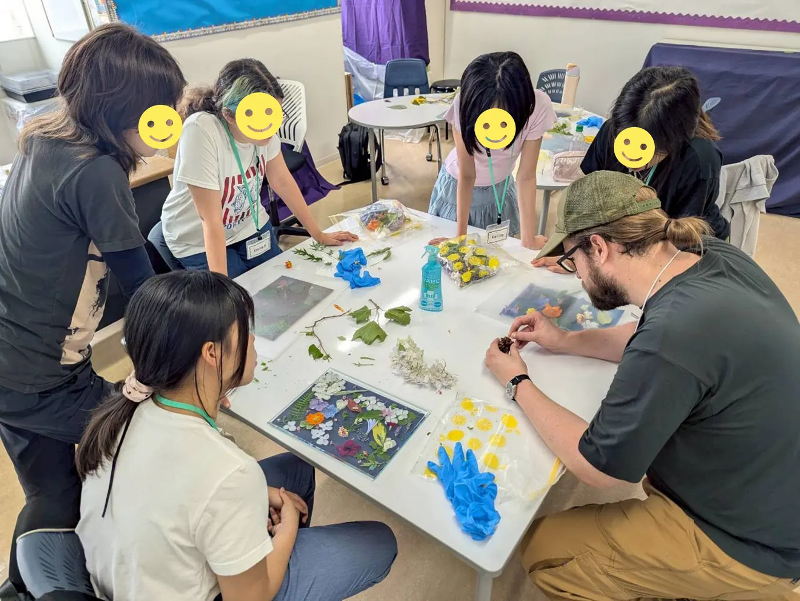

Hands-on hydroponics workshops for families, communities, and teams.
A flexible offering for newcomers and returning participants.

Overview
Our workshops are standalone hands-on sessions — ranging from 60 minutes to a full day — designed for families, community groups, corporate teams, or school events. They're a great way to experience urban farming without committing to a full program. Workshops cover topics like introduction to hydroponics, seed starting, building a mini growing system, nutrition and taste testing, and sustainability awareness. We can run them at your location or at our space.
Typical workshop flow
A standard 90-minute workshop includes a brief introduction to hydroponics (15 minutes), a hands-on tower planting or system-building activity (45 minutes), a discussion on sustainability or nutrition (15 minutes), and a tasting or take-home activity (15 minutes). Longer workshops add deeper experiments, design challenges, or cooking components.
Upcoming dates
Family Hydroponics Workshop · Saturday, December 12, 1:00–3:00 PM · Art Farm Ikejiri. Ask us to save you a spot.
Want a private workshop for your school, company, or community group? Contact us to arrange one. New dates are also posted on our Events page and Instagram.
Pricing
Workshop pricing varies by format, group size, and location. Contact us for a quote. Corporate team-building and private group workshops are available on request.